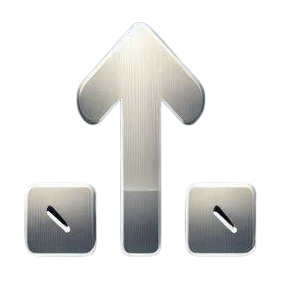

-

Роль Захоплення - легкі танки захоплення спеціалізуються на швидкому захоплені позицій, що спрощує переміщення інших типів техніки туди. Ці танки одні з найшвидших в грі , але найчастіше зовсім не мають броні.
-

Роль Штурму - легкі танки штурму мають гарну швидкість та середню броню. Підходять для підтримки іншої техніки та прориву флангу якщо важкі танки в цей момент допомогти не можуть.
-

Універсальна Роль - універсальні легкі танки мають гарну швидкість та іноді броню. Ці танки можуть виконувати завдання як Легких Танків Захоплення так і Легких Танків Штурму в залежності від ситуації та потреб, що робить їх дуже корисними.
-
Роль Штурму - ці танки мають багато броні , що робить їх складними суперниками, але танки цієї ролі мають найчастіше слабку гармату. Танки цієї ролі підходять для прориву флангів.
-
Універсальна Роль - ці танки найчастіше мають середню броню та гармати любих типів. Танки цієї ролі можуть виступати як Штурмові танки , так і як танки Підтримки в залежності від ситуації в бою.
-

Роль Підтримки - ці важкі танки найчастіше мають слабку броню, але унікальні гармати. Ці танки не підходять для прориву позицій , але створені та приспособлені для підтримки танків ролі "Штурм" чи "Універсальні".
-

Роль оборони - це пт-сау, які мають середню чи погану броню , та різноманітні гармати. Спеціалізуються на захисті позицій.
-
Роль Підтримки - ці пт-сау найчастіше мають середню броню та сильні гармати , що робить їх спроможніми бути безпосередньо на передовій чи другій лінії пліч опліч з важкими танками , на відміну від пт-сау Оборони.
-
Універсальна Роль - ці пт-сау мають середні характеристики бронювання та різноманітні гармати. В залежності від ситуації можуть бути як пт-сау Оборони чи пт-сау Підтримки.